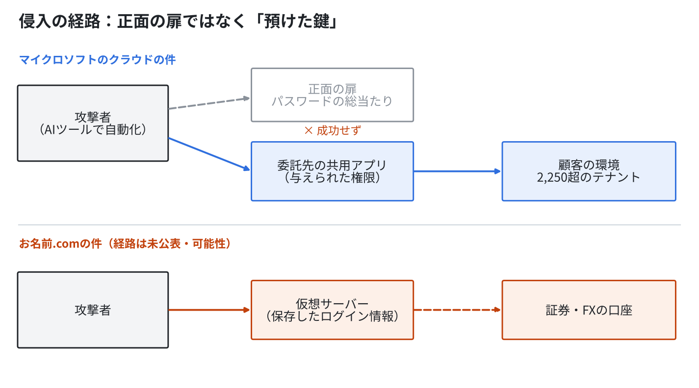
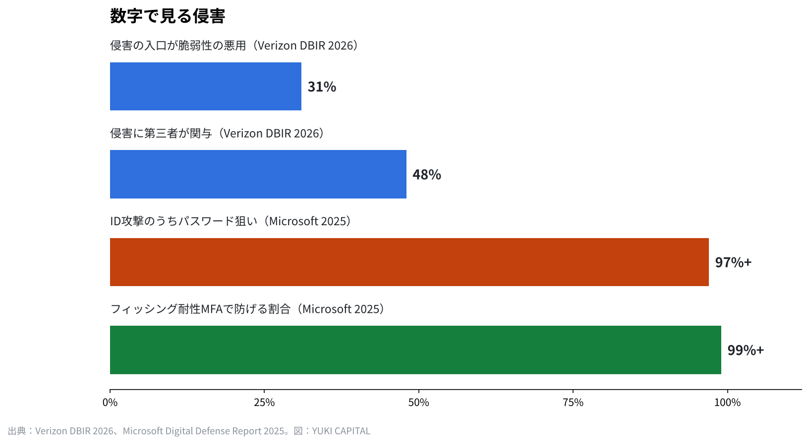

盾より強い盾はない。マイクロソフトのクラウドとお名前.comの事件から見る、守りの技術と限界
2026年10月21日と22日、規模も相手もまったく違う2つの侵入が、同じ週に公表された。
1つはマイクロソフトのクラウドを使う会社が委託先のアプリ経由で狙われた件、もう1つはお名前.comの仮想サーバーが不正アクセスを受けた件だ。
どう入られ、どう対処し、大企業はどう防いでいるのか。そして事実上防げるのかを、一次資料で順に確かめる。

2つの事件で何が起きたのか
マイクロソフトは10月21日、中国政府と連携するとされる集団Storm-0940の活動を公表した。2,250を超えるテナント（クラウドを契約する組織の単位）に、1分間に2,900回のサインインが試された。失敗は15万1,000件を超える。マイクロソフト自身のシステムは侵害されていないと、同社は明記している。
入口になったのは、委託先のクラウドのバックアップアプリだった。ConnectWise Cloud Backup（旧SkyKick）という、多くの会社が共同で使うアプリが乗っ取られ、そのアプリに与えられていた権限を使って顧客の環境へ入り込んだ。標的にしてから管理者の権限を取るまで、3時間かからなかった例もあったという。攻撃には、侵入テスト用に公開されている複数エージェント型のAIツールARTEXが使われた。
お名前.comの件は、FXの自動売買などに使う仮想サーバー（VPS）のサービスで起きた。10月19日に利用者の問い合わせで調査を始め、20日に不正なプログラムを確認し、21日午前4時から全プランを止めた。22日の第2報では、取引口座で不正な操作があったと報告を受けたこと、サーバーに保存したログイン情報が取られた可能性を公表している。影響の可能性があるサーバーは26,739件で、侵入の経路はまだ公表されていない。利用規約では、賠償は24時間以上の全面停止の場合に限られ、上限は月額料金の1か月分とされている。
| 項目 | マイクロソフトのクラウドの件 | お名前.comの件 |
|---|---|---|
| 公表 | 2026年10月21日（同社のセキュリティブログ） | 10月21日 第1報、22日 第2報 |
| 狙われた場所 | 委託先の共同利用アプリの権限 | 仮想サーバーと、そこに保存されたログイン情報 |
| 規模 | 2,250超のテナント、毎分2,900回の試行 | 影響の可能性26,739件 |
| 本体の侵害 | なし（同社が明記） | 調査中（経路は未公表） |
| AIの関与 | 侵入テスト用のAIツールARTEXを悪用 | 公表なし |
どう入られたのか：共通するのは「預けた鍵」
2つの事件は規模も相手も違うが、狙われた場所には共通点がある。攻撃者は正面の扉を壊していない。すでに渡されていた鍵を使っている。
マイクロソフトの件では、パスワードを総当たりで試す攻撃（パスワードスプレー）は10月10日から14日にかけて行われたが、成功しなかった。突破口になったのは、顧客が業務のために許可していたアプリの権限だった。お名前.comの件では、利用者が自動売買のためにサーバーへ保存していた証券会社やFX会社のログイン情報が、口座への入口になった可能性がある。
これを専門の言葉ではサプライチェーンの侵害と呼ぶ。自社がどれだけ守っても、つないでいる外の会社、預けている外の仕組みが破られれば、そこから入られる。Verizonの2026年の調査（DBIR）では、侵害の入口の31%が脆弱性の悪用で、侵害の48%に第三者が関わっていた。IPAの「情報セキュリティ10大脅威2026」でも、組織編の2位はサプライチェーンや委託先を狙った攻撃である。

AIは攻める側の速度を変えた
今回目を引くのは、攻撃にAIが使われたことだ。ARTEXはもともと、守る側が自社の弱点を探すために公開された道具である。それが攻撃に転用され、多数のテナントへ同時に試行を続けた。
Anthropicも2025年11月、自社のAIが国家の関与が疑われる集団にスパイ活動へ使われた事例を公表している。作業の大半をAIが自律的にこなしていたという。攻撃の手順が自動になれば、人の手では追いつかない速さで試行が繰り返される。
一方で、守る側の時間は短くなっていない。Google傘下のMandiantによる2026年の報告（M-Trends）では、侵入から発見までの日数の中央値は14日だった。入られてから気づくまでの2週間に、攻撃者は権限を広げ、情報を持ち出す。IBMの調査では、データ侵害1件あたりの平均の費用は2025年に444万ドル、2026年に499万ドルとされる。


大企業はどう防いでいるのか
大企業の守りは、ソフトを1つ足す話ではない。考え方そのものが変わってきた。
1つ目は「侵入される前提」で設計することだ。米国のNISTがSP 800-207で示したゼロトラストは、社内か社外かで信用を決めず、すべてのアクセスをその都度確かめる。2024年のサイバーセキュリティ・フレームワーク2.0では、特定・防御・検知・対応・復旧の5つに「統治」が加わり、経営の責任として守りを扱うよう求めている。
2つ目は多要素認証だ。マイクロソフトは2019年に、多要素認証でアカウントへの攻撃の99.9%を防げると公表した。同社の2025年の報告では、IDへの攻撃の97%超がパスワードを狙うもので、フィッシングに強い多要素認証（物理キーなど）なら99%超を防げるという。今回もパスワードの総当たりは成功していない。
3つ目は、外の会社に渡す権限を小さくし、定期的に見直すことだ。業務アプリに管理者に近い権限を渡したままにしていれば、そのアプリが乗っ取られた瞬間に、自社の鍵束がまとめて渡る。
利用者と小さな会社はどう対処するか
大企業と同じ予算は使えない。それでも、効く対策の多くはお金より手間で決まる。
お名前.comの第2報が求めた対応は、問題のサーバー以外の端末からパスワードを変えること、ログイン中の端末をすべてログオフすること、ログインの履歴を確かめること、二段階認証を入れること、使い回しのパスワードを変えること、事件に便乗したフィッシングに注意することだった。どれも今日できる。IPAも、パスワードを使い回さないこと、多要素認証を使うことを、個人の基本の対策として挙げている。
もう1つ大事なのは、預ける量を減らすことだ。サーバーやクラウドに証券口座のログイン情報を置かない。会員登録では、なくても使える項目を入れない。業務で使うアプリに渡した権限を、年に1度は洗い出す。入れた情報は預け先に残り、預け先が破られれば、こちらの守りとは関係なく外へ出る。
事実上、防げるのか
結論から言えば、完全に防ぐことはできないと僕は考えている。攻撃は最大の防御と言われるように、攻める側は1か所の穴を見つければよく、守る側はすべての穴を塞がなければならない。AIで攻撃の試行が自動になれば、その差はさらに開く。
ただし、被害の大きさは変えられる。マイクロソフトの件でも、パスワードの総当たりは成功しなかった。基本の守りは、少なくとも正面の扉では効いていた。侵入される前提で設計し、渡す鍵を減らし、早く気づく仕組みを持つ。防げない攻撃を、致命傷にしない設計はできる。
僕はこう見ている
盾より強い盾はない。だから僕は、守りをソフトの数では考えていない。考えるのは、情報をどこに置くか、誰に鍵を渡すかである。
シェアオフィスの会員情報は自社のシステムに置かず、ソフトウェアの会社のサービスで管理している。銀行と証券の口座には二段階認証を全部入れ、野村證券は電話の口頭でしか注文を受けない形にしている。ネットから売買できなければ、入られても注文は出せない。
GMOは守りの強い会社だと僕は見ていた。それでも破られる。だからこそ、会社はサイバーセキュリティにお金をかけ続ける必要があり、利用者は預ける情報を必要最小限にする必要がある。投資の目線で見れば、盾と矛の両方を自前で持つ会社ほど、こうした局面で強いのではないだろうか。
出典
- Microsoft Security Blog「Storm-0940 uses ARTEX agentic AI in ConnectWise supply chain compromise」 https://www.microsoft.com/en-us/security/blog/2026/10/21/storm-0940-uses-artex-agentic-ai-connectwise-supply-chain-compromise/
- GMOインターネットグループ 注意喚起（第2報） https://group.gmo/info/alert/20261022/
- お名前.com お知らせ（第1報） https://www.onamae.com/news/article/11584
- お名前.com お知らせ（第2報） https://www.onamae.com/news/article/11593
- IPA「情報セキュリティ10大脅威2026」 https://www.ipa.go.jp/security/10threats/10threats2026.html
- Verizon「Data Breach Investigations Report」 https://www.verizon.com/business/resources/reports/dbir/
- Mandiant「M-Trends」 https://cloud.google.com/security/resources/m-trends
- IBM「Cost of a Data Breach Report」 https://www.ibm.com/reports/data-breach
- Anthropic「Disrupting the first reported AI-orchestrated cyber espionage campaign」 https://www.anthropic.com/news/disrupting-AI-espionage
- NIST SP 800-207「Zero Trust Architecture」 https://csrc.nist.gov/pubs/sp/800/207/final
- NIST「Cybersecurity Framework 2.0」 https://www.nist.gov/cyberframework
- Microsoft「One simple action you can take to prevent 99.9 percent of attacks on your accounts」 https://www.microsoft.com/en-us/security/blog/2019/08/20/one-simple-action-you-can-take-to-prevent-99-9-percent-of-account-attacks/
- お名前.com レンタルサーバー利用規約 https://www.onamae.com/agreement/a_ag/server.html
- IPA「アカウントの安全な管理」 https://www.ipa.go.jp/security/anshin/measures/account_security.html
- CISA「Implementing Phishing-Resistant MFA」 https://www.cisa.gov/sites/default/files/publications/fact-sheet-implementing-phishing-resistant-mfa-508c.pdf
写真：FlyD／Scott Rodgerson（Unsplash）。図はYUKI CAPITALが作成
日々の数字と判断は、Xで記録している。